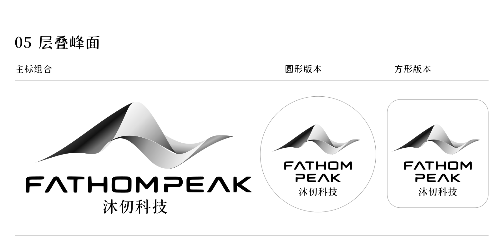
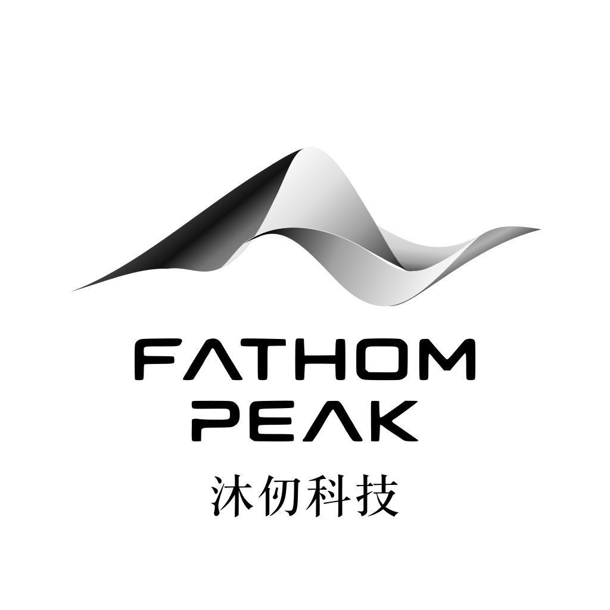

<!doctype html><html lang="zh-CN"><meta charset="utf-8"><title>沐仞科技 · 字标统一 v31</title><style>body{margin:0;background:#f8f8f8;color:#212021;font:16px/1.7 -apple-system,sans-serif}main{max-width:1150px;margin:40px auto;padding:24px}img{max-width:100%;background:white}h1{font-size:26px}a{color:#2f63b8;margin-right:24px}.row{display:grid;grid-template-columns:1fr 1fr;gap:30px}.row img{width:100%}</style><main><h1>沐仞科技 · 中英字标统一版</h1><p>英文直接提取图二轮廓；中文四字按图二统一笔形、字重与基线。v31 / 2026-10-20</p><p><a href="fathompeak-logo-unified-20261020.zip">下载 SVG + PNG</a><a href="字体规范_2026-10-20.md">字体规范</a><a href="更新清单_2026-10-20.md">更新清单</a></p><div class="row"><div><h2>微信头像</h2></div><div><h2>独立字标</h2></div></div></main></html>